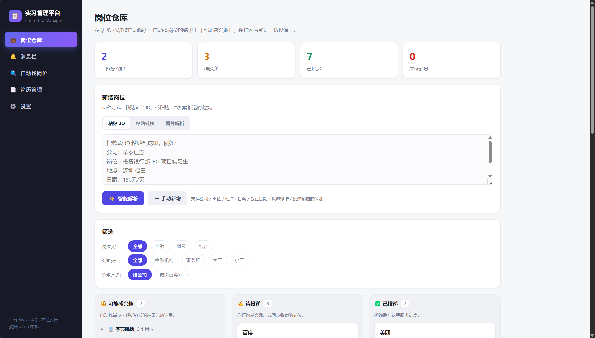

Louise (Yu Lu)
Financial Statement Analysis Webpage
My Role : Designed the end-to-end workflow chaining together data extraction, validation, metric calculation, valuation, and report generation.
Core Features: A web-based platform designed to analyze A-share listed companies' annual reports. It performs financial health diagnosis, financial risk identification, equity valuation, and auto-generates research reports.
Engineering & Data Highlights:
- Data Quality Gate: Implemented validation rules to intercept data anomalies (e.g., unit errors, year mismatches, magnitude anomalies) and auto-backfill with source data, ensuring calculation accuracy.
- Unified Object Model: Defined standardized data schemas to support cross-module functionalities including anomaly analysis, forward-looking projections, report generation, Q&A, and data export APIs.

Internship Information Management Platform
The Problem: Internship postings are scattered across WeChat groups and websites, making them easy to miss and hard to compare.
My Solution: Designed a structured tracking system to manage internship opportunities, tracking key variables like application deadlines, role types, and return offer potential to improve decision-making efficiency.

AI-Assisted Information Processing (DeepSeek via QQ)
Overview: Customized and integrated an AI model (DeepSeek) into a QQ chat interface, configuring it as a personal digital assistant to automate information filtering and task management.
Configured Features: Automated email monitoring with instant priority alerts; autonomous Bilibili content discovery and bookmarking based on interests.
Risk Management: I use AI for initial screening only; final investment/analysis conclusions are always verified against the original source documents.